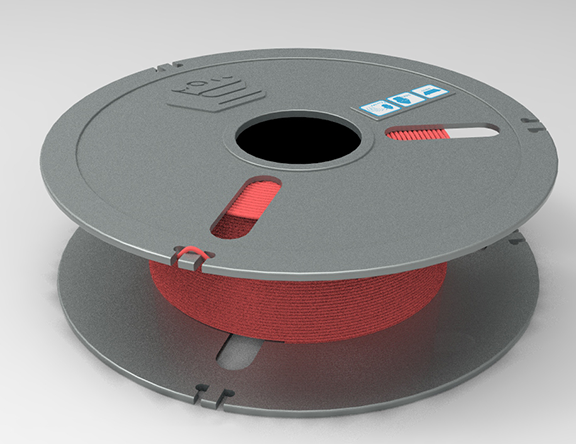
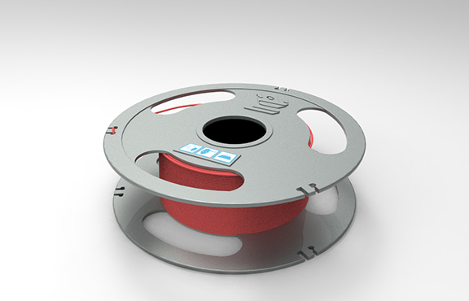
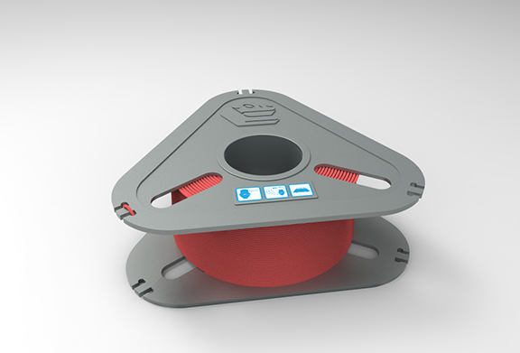
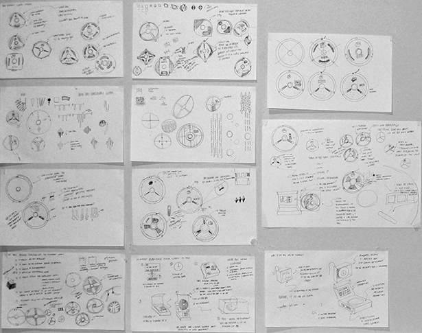

Ryan is a designer.
He can build
polymaker filament case
product design, manufacturing processes, CAD
In the summer of 2014 I created a design for the case that Polymaker's filament is sold in. This was an exercise in rapid prototyping and iteration, balancing the needs of the client and also my own considerations.



